Англоязычный сайт про маникюр дома для аудитории США. Людей приводит Pinterest бесплатно, деньги дают реклама на сайте и партнёрские ссылки на товары.
Идёт бесплатный тест, сайта ещё нетЧеловек ищет в Pinterest, например, «short christmas nails», видит нашу картинку, переходит на статью. В статье стоит реклама, которая платит за просмотры, и ссылки на товары, которые платят процент с покупки. Пин живёт месяцами и приводит людей без доплат.
Сейчас мы на шаге до сайта: проверяем, показывает ли Pinterest наши картинки вообще. Если нет, домен и статьи были бы выброшенными деньгами и временем.
Два формата поровну: чистое фото и то же фото с маленькой подписью. Под каждым пином дата выхода. По статистике будет видно, какой формат Pinterest показывает охотнее. Фото нарисованы нейросетью, каждое просмотрено вручную.
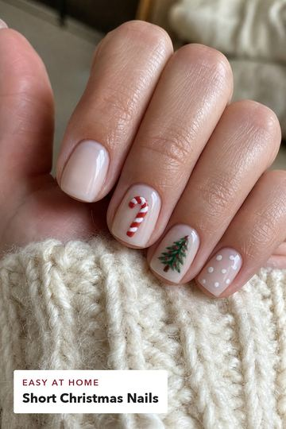
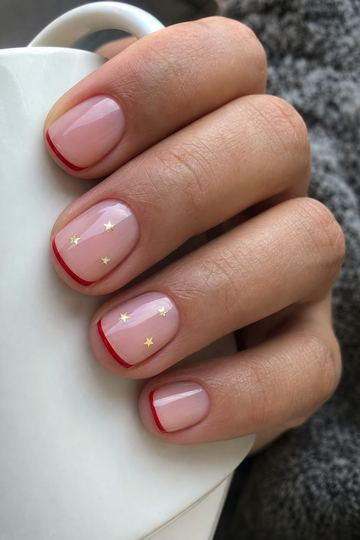
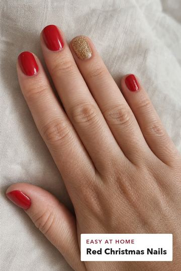
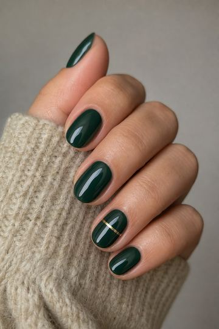
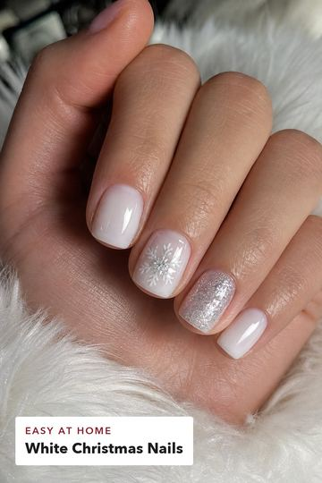
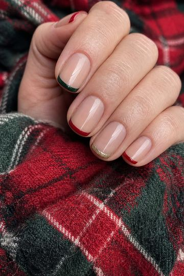
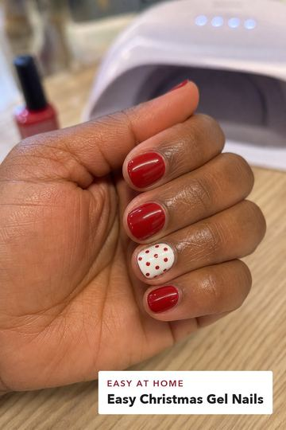
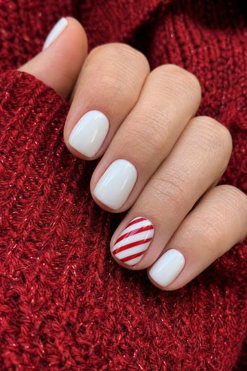
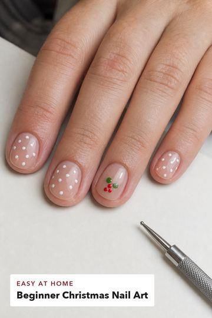
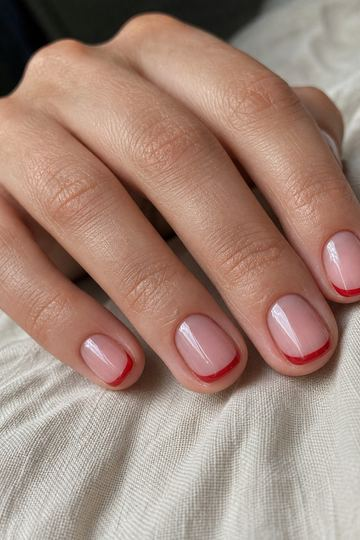
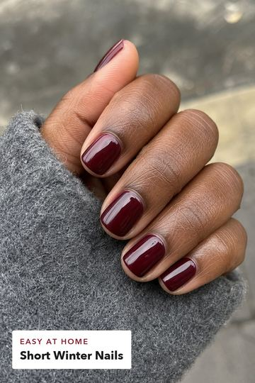
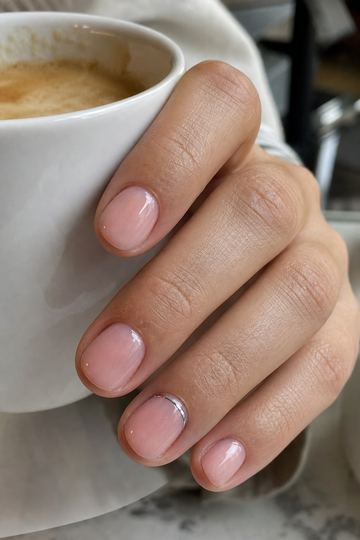
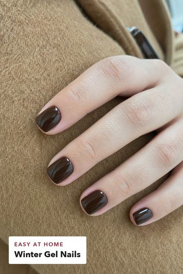
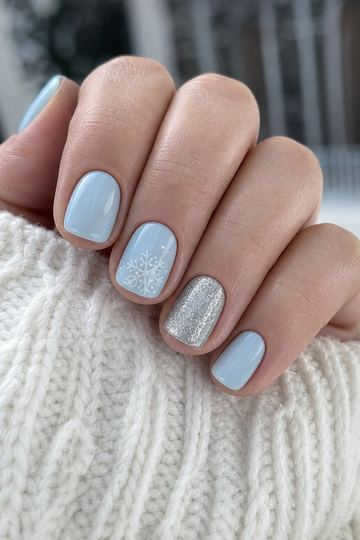
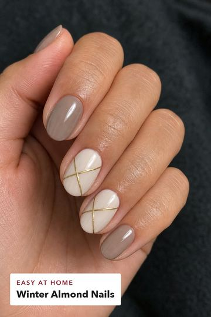
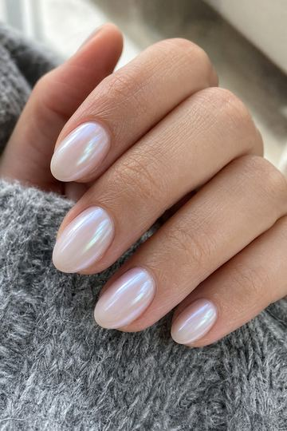
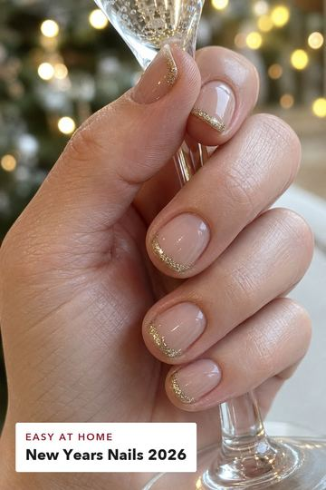
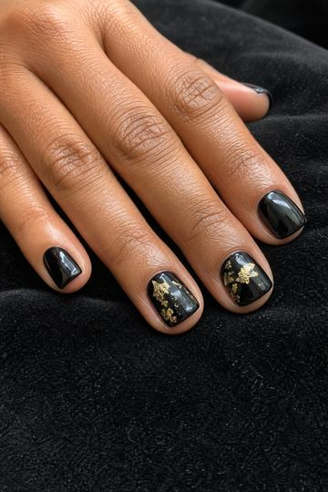
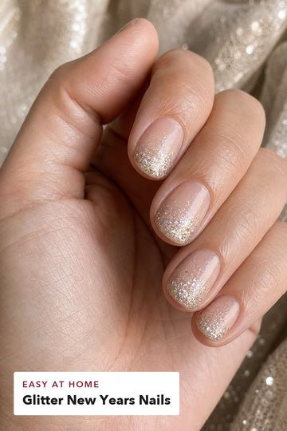
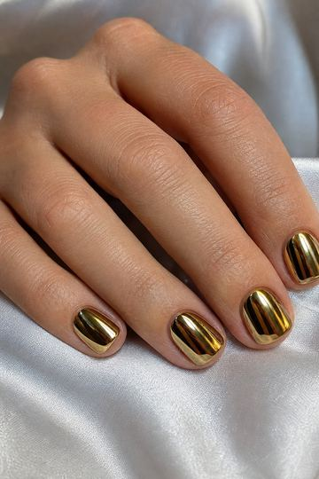
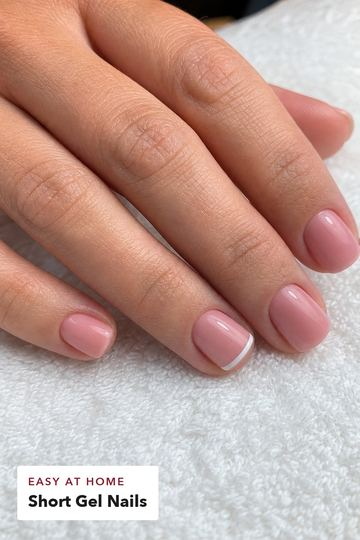
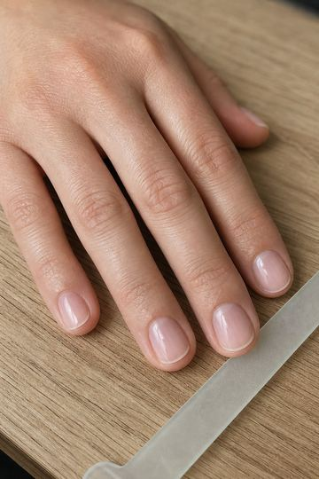
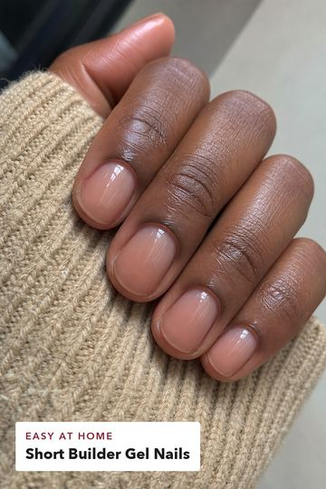
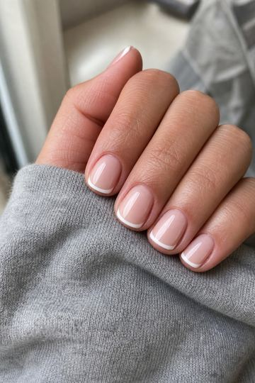
| Когда | Что происходит |
|---|---|
| 14–23.10 | Pinterest публикует 24 пина, по 2–3 в день |
| около 21.10 | Первая статистика. Вторая пачка на 60–100 пинов в формате, который показывают лучше |
| начало ноября | Решение. Есть показы и сохранения: покупаем домен и делаем сайт. Ноль: меняем подачу или тему, сайт не покупаем |
| после решения | Сайт, 20–30 статей, заявка на рекламу Google. К февральскому сезону (День святого Валентина) пины публикуются в декабре |
Расходы. Потрачено $1.05. Сайт обойдётся примерно в $30 в год за домен и хостинг, плюс около $0.04 за каждую новую картинку.
Доходы. По открытым источникам, которые мы сами не перепроверяли: до $100 в месяц такой блог доходит за 6–12 месяцев регулярной работы, до $1000 за 12–24 месяца, и большинство не доходит. Первые деньги будут центами. Публичных кейсов новых блогов именно про ногти с цифрами найти не удалось.
Правило остановки: если за 4 месяца после запуска сайта нет 1000 визитов в месяц, меняем тему, а не наращиваем объём.